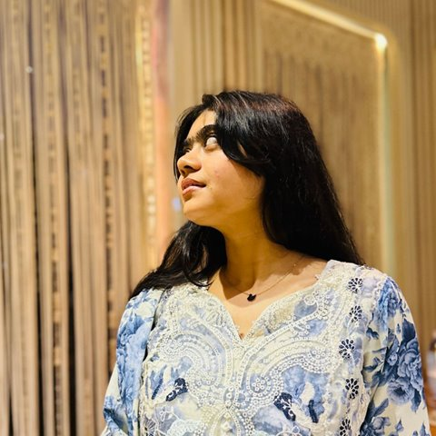
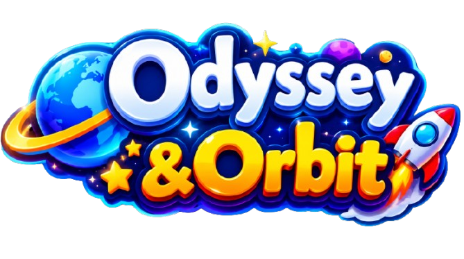

Abandoned but Not Forgotten
Humanity's missions to the Moon and Mars have left behind countless pieces of equipment. Yet, their stories, purposes, and historical significance often remain overlooked.

“Meet the machines we left behind.”
Every Object Has a Story. Every Mission Leaves a Legacy.
We are Odyssey & Orbit, a team passionate about space exploration and storytelling. We aim to uncover the forgotten stories of human-made objects left behind on the Moon and Mars.
Humanity's missions to the Moon and Mars have left behind countless pieces of equipment. Yet, their stories, purposes, and historical significance often remain overlooked.
We built an interactive website using NASA's publicly available data to explore discarded equipment on the Moon and Mars. By combining data with storytelling, we make these forgotten pieces of space history more accessible, engaging, and meaningful.
Team Leader & Researcher
Web Developer & UI/UX Designer
Data Analyst

Scriptwriter & Storyteller
Video Editor & Visual Production Lead

The machines in our stories left a trail of real photographs behind. Search NASA's own image library for any machine, mission or place, and open a photo to see it on NASA's website.
Photos and text: NASA Image and Video Library. Each photo opens on NASA's website in a new tab.